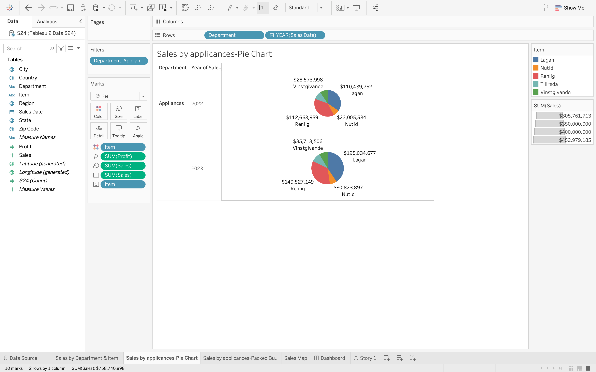
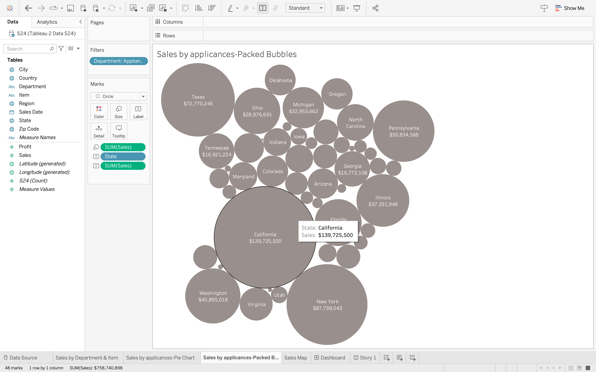

There was three main parts to this project. The first part was the Tableau workbook that differs from the Tableau 1 project. This workbook included 4 various visualizations, the provided data source, the interactive dashboard, and a story with text captions. The second part of this project is the word document. There are four parts to this word document.
The five parts of the word document in this project includes the data, workbook sheets, workbook dashboard, story, and conclusion. Each part of this document involves writing a description. The workbook sheet portion requires screenshots and so does the workbook dashboard and the story. The conclusion had 2 parts. The first part included discussing the profit from the data source and recommendation regarding improvement. The second part was a description on new things I learned about Tableau and any challenges that come from the project.
The third and final part of this project was the YouTube video. This video had a minimum time requirement of 4 minutes and it had to be recorded on a computer. This section of the project also required us to shows our faces along with displaying the Tableau project in detail. The details included the data source, the story of the analysis, the visualization, etc. At the end, I spoke about the new things that I learned and uploaded the video to YouTube.


I learned a variety of new things in this project. I learned about how to incorporate different chart visualizations. I learned how to make a bubble chart and a pie chart to analyze different information. I also learned how to record a video on my laptop through Teams. I didn't have much challenges to overcome in this project and I overall enjoyed learning all these new things.
Link back to the portfolio page